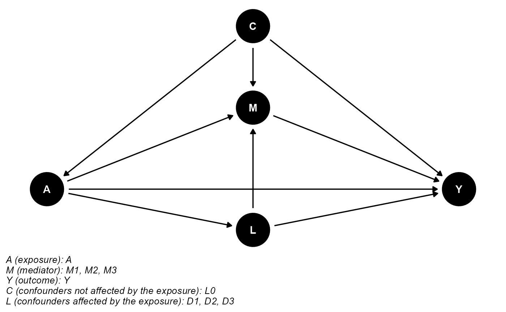
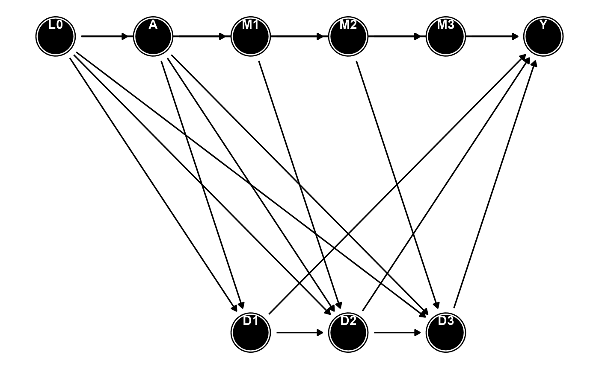

vignettes/time_to_event_mediator.Rmd
time_to_event_mediator.RmdWe follow the framework of Arce Domingo-Relloso et al.
(2024), who extend the mediational g-formula to accommodate longitudinal
mediators and competing events in a single causal framework. In studies
where both the mediator and competing risks evolve over time,
traditional mediation estimators may fail to correctly identify
path-specific effects. The approach implemented in
cmest_med_longi overcomes this challenge by modeling the
structure—exposure, mediator history, competing event history, and
survival process—and then evaluating the interventions through the
g-formula.
This example illustrates how to use cmest_med_longi to
estimate path-specific causal effects in settings where:
The method follows the framework of Arce Domingo-Relloso et
al. (2024), which extends the mediational g-formula to accommodate
longitudinal mediators and competing events simultaneously. When both
the mediator and the competing event process evolve over time, standard
mediation estimators may not correctly separate direct and indirect
pathways. The approach implemented in cmest_med_longi
overcomes this limitation by modeling the full joint longitudinal
structure—exposure, mediator history, competing event history, and
survival process—and applying the g-formula to evaluate counterfactual
interventions.
Under this framework, the total effect of an exposure on a time-to-event outcome is decomposed into four interpretable components.
Direct effect (DE)
The portion of the exposure effect not operating through either the
mediator trajectory or the competing event process. This effect is
defined by modifying the exposure while holding both mediator and
competing event histories at levels that would occur under a reference
exposure value.
Indirect effect through the mediator (IEM)
The part of the effect transmitted through the entire history of the
time-varying mediator, while fixing the competing event process to its
reference distribution. This represents how changes in the mediator
pathway contribute to the exposure–outcome association.
Indirect effect through the competing event (IED)
The portion of the effect transmitted through the competing-risk
process. Because a competing event can alter the risk set for the
primary outcome, this pathway measures how differences in the occurrence
or timing of the competing event contribute to the exposure
effect.
Total effect (TE)
The overall effect of the exposure on the outcome when the mediator
pathway, the competing event pathway, and any direct mechanisms are all
allowed to vary naturally.
Under the identification assumptions presented in Arce
Domingo-Relloso et al. (2024), each path-specific effect can be
expressed using the longitudinal mediational g-formula. The
cmest_med_longi function implements these estimands by
specifying regression models for the exposure, mediator, competing event
process, and time-to-event outcome; generating counterfactual
trajectories under fixed exposure values; and computing the
corresponding g-formula risk contrasts.
In the remainder of this example, we construct a simplified dataset
with a mediator measured at three time points, a competing event
indicator also measured at three time points, and a time-to-event
outcome. We then demonstrate how to estimate the four path-specific
effects using cmest_med_longi.
We consider a baseline exposure , a vector of baseline covariates , a longitudinal mediator , a competing event process and a time-to-event outcome observed over discrete follow-up intervals . Let denote the survival indicator up to each interval, where if the individual is alive and event-free at time .
We define counterfactual outcomes under possibly contrary-to-fact interventions on the exposure, the mediator history, and the survival process, following the path-specific framework of Domingo-Relloso et al. (2024). For two exposure levels (reference) and $a^\*$ (higher level), the quantities of interest at time are effects on the risk difference scale:
Direct effect (DE): effect of changing from to $a^\*$ while holding both the mediator and the survival process at the levels they would take under exposure : $$ DE_{k+1}(a^\*, a) = \mathbb{E}\big\{Y_{k+1}(a^\*, \bar M_k(a,\bar S_{k-1}(a)), \bar S_k(a,\bar M_k(a)))\big\} - \mathbb{E}\big\{Y_{k+1}(a, \bar M_k(a,\bar S_{k-1}(a)), \bar S_k(a,\bar M_k(a)))\big\}. $$
Indirect effect through the longitudinal mediator (IEM): effect that operates by changing the entire mediator trajectory from what it would be under to what it would be under $A=a^\*$, while forcing the survival process to evolve as under : $$ IEM_{k+1}(a^\*, a) = \mathbb{E}\big\{Y_{k+1}(a^\*, \bar M_k(a^\*,\bar S_{k-1}(a)), \bar S_k(a,\bar M_k(a^\*)))\big\} - \mathbb{E}\big\{Y_{k+1}(a^\*, \bar M_k(a,\bar S_{k-1}(a)), \bar S_k(a,\bar M_k(a)))\big\}. $$
Indirect effect through the competing event (IED): effect that operates by changing the survival and competing risk process from what it would be under to what it would be under $A=a^\*$, while keeping the mediator trajectory at the level it would take under $A=a^\*$: $$ IED_{k+1}(a^\*, a) = \mathbb{E}\big\{Y_{k+1}(a^\*, \bar M_k(a^\*,\bar S_{k-1}(a^\*)), \bar S_k(a^\*,\bar M_k(a^\*)))\big\} - \mathbb{E}\big\{Y_{k+1}(a^\*, \bar M_k(a^\*,\bar S_{k-1}(a)), \bar S_k(a,\bar M_k(a^\*)))\big\}. $$
Total effect (TE): overall effect of changing the exposure from to $a^\*$, allowing both the mediator and the competing risk process to evolve under their natural levels for each exposure: $$ TE_{k+1}(a^\*, a) = \mathbb{E}\big\{Y_{k+1}(a^\*, \bar M_k(a^\*,\bar S_{k-1}(a^\*)), \bar S_k(a^\*,\bar M_k(a^\*)))\big\} - \mathbb{E}\big\{Y_{k+1}(a, \bar M_k(a,\bar S_{k-1}(a)), \bar S_k(a,\bar M_k(a)))\big\}. $$
By construction, the three path-specific effects sum to the total effect: $$ TE_{k+1}(a^\*, a) = DE_{k+1}(a^\*, a) + IEM_{k+1}(a^\*, a) + IED_{k+1}(a^\*, a). $$
In practice, the function cmest_med_longi() reports
these effects at a user-specified time horizon $t^\*$ (for example, 10 years of follow-up),
expressed as differences in cumulative risk (or in cumulative incidence
derived from the additive hazards model). It also returns the proportion
of the total effect explained by the paths through the mediator and
competing risk, $$
Q(t^\*) = \frac{IEM(t^\*) + IED(t^\*)}{TE(t^\*)} \times 100,
$$ interpreted as the percentage of the total effect operating
through the mediator trajectory (including the nested pathway through
the competing event).
Under standard identifiability conditions for longitudinal mediation with competing risks (exchangeability, positivity, consistency and no interference), the counterfactual risks above are identified by the mediational g-formula. For generic arguments indicating the exposure level carried through the mediator, survival and outcome components, the g-formula identifies as a functional of the observed data distribution. The path-specific effects can then be written as contrasts of , for example $$ DE_{k+1}(a^\*, a) = \phi(a,a,a^\*) - \phi(a,a,a), \quad IEM_{k+1}(a^\*, a) = \phi(a^\*,a,a^\*) - \phi(a,a,a^\*), $$ $$ IED_{k+1}(a^\*, a) = \phi(a^\*,a^\*,a^\*) - \phi(a^\*,a,a^\*), \quad TE_{k+1}(a^\*, a) = \phi(a^\*,a^\*,a^\*) - \phi(a,a,a). $$
The function cmest_med_longi() implements a parametric
mediational g-formula algorithm tailored to time-varying mediators and
competing risks:
Choose two exposure levels and $a^\*$ (for example, the 25th and 75th percentiles of the exposure distribution) and a time horizon $t^\*$.
Fit sequential regression models for the longitudinal mediator and the competing event at each visit , typically using linear or logistic models of the form where denotes the observed history up to visit .
Transform the data into counting-process format and fit an
additive hazards model for the time-to-event outcome including the full
mediator history, exposure and baseline covariates, for example using
the timereg package:
Using the fitted models, simulate counterfactual trajectories of , and under each of the required intervention regimes:
Average the simulated outcomes over individuals to obtain empirical estimates of the counterfactual risks at $t^\*$ for each regime. Plug these estimates into the contrasts above to obtain $\widehat{DE}(t^\*)$, $\widehat{IEM}(t^\*)$, $\widehat{IED}(t^\*)$ and $\widehat{TE}(t^\*)$, and compute $$ \widehat{Q}(t^\*) = \frac{\widehat{IEM}(t^\*) + \widehat{IED}(t^\*)}{\widehat{TE}(t^\*)} \times 100. $$
Optionally, repeat the entire procedure over bootstrap resamples to obtain confidence intervals for each effect and for the mediated proportion $Q(t^\*)$.
This algorithm mirrors the multistate mediator framework implemented
in cmest_multistate, but extends it to the path-specific
decomposition with a longitudinal mediator nested within the competing
risk process, as described in Domingo-Relloso et al. (2024).
##
## Attaching package: 'dplyr'## The following objects are masked from 'package:stats':
##
## filter, lag## The following objects are masked from 'package:base':
##
## intersect, setdiff, setequal, union## Warning: package 'ggplot2' was built under R version 4.5.2
cmdag(
outcome = "Y",
exposure = "A",
mediator = c("M1", "M2", "M3"), # mediator measured at 3 time points
basec = "L0", # baseline confounder
postc = c("D1", "D2", "D3"), # competing risk indicator at 3 time points
node = TRUE,
text_col = "white"
)
## Warning: package 'ggdag' was built under R version 4.5.2##
## Attaching package: 'ggdag'## The following object is masked from 'package:stats':
##
## filter## Warning: package 'dagitty' was built under R version 4.5.2
library(ggplot2)
library(tibble)
## 1. Manually specify coordinates (ggdag manual style)
coords <- tribble(
~name, ~x, ~y,
"L0", 0, 0,
"A", 1, 0,
"M1", 2, 0,
"M2", 3, 0,
"M3", 4, 0,
"Y", 5, 0,
"D1", 2, -1,
"D2", 3, -1,
"D3", 4, -1
)
## 2. Define the DAG structure
dag_longi <- dagify(
# outcome
Y ~ A + L0 + M1 + M2 + M3 + D1 + D2 + D3,
# mediator process
M1 ~ A + L0,
M2 ~ A + L0 + M1,
M3 ~ A + L0 + M2,
# competing risk process
D1 ~ A + L0,
D2 ~ A + L0 + D1 + M1,
D3 ~ A + L0 + D2 + M2,
# exposure model
A ~ L0,
exposure = "A",
outcome = "Y",
coords = coords
)
## 4. Plot following the ggdag manual style
ggplot(dag_longi, aes(x = x, y = y, xend = xend, yend = yend)) +
geom_dag_edges() +
geom_dag_node() +
geom_dag_text(aes(label = name), vjust = -0.8) +
theme_dag()
med_longitudinal function
Here we demonstrate the original med_longitudinal function:
# Main function to conduct mediation analysis in presence of time-varying mediators, a survival outcome and competing risks in difference in hazards scale
med_longitudinal=function(L=NULL, M, m, Y, treat='logcocr', control.value=a, treat.value=a_star, data, time_points, peryr=100000){
N=dim(data)[1]
NL=length(L)
NM=length(M)
boot <- foreach(i=1:10000, .combine='rbind') %dopar% {
ind <- sample(1:N, replace=TRUE)
MModel = list()
for (i in 1:NM){
MModel[[i]] <- rmvnorm(1, mean = coef(M[[i]]), sigma = vcov(M[[i]]))
}
YModel = rmvnorm(1, mean = Y$gamma, sigma = Y$robvar.gamma)
PredictL_a <- PredictL_astar <- PredictL_astar_a <- matrix(NA,nrow=N,ncol=NL)
PredictM_a <- PredictM_astar <- PredictM_a_astar <- matrix(NA,nrow=N,ncol=NM)
# Predict M1
pred.data.astar.m1 <- pred.data.a.m1 <- model.frame(M[[1]])[ind,]
pred.data.astar.m1[, treat] <- treat.value
pred.data.a.m1[, treat] <- control.value
m1mat.astar <- model.matrix(terms(M[[1]]), data = pred.data.astar.m1)
m1mat.a <- model.matrix(terms(M[[1]]), data = pred.data.a.m1)
PredictM_astar[,1] <- tcrossprod(MModel[[1]], m1mat.astar)
PredictM_a[,1] <- tcrossprod(MModel[[1]], m1mat.a)
# Predict L1
if(NL > 0){
pred.data.astar.l1 <- pred.data.a.l1 <- pred.data.astar.a.l1 <- model.frame(L[[1]])[ind,]
pred.data.astar.l1[, treat] <- pred.data.astar.a.l1[, treat] <- treat.value
pred.data.a.l1[, treat] <- control.value
pred.data.astar.l1[, m[1]] <- PredictM_astar[,1]
pred.data.a.l1[, m[1]] <- pred.data.astar.a.l1[, m[1]] <- PredictM_a[,1]
PredictL_astar_a[,1] <- rbinom(N, size=1, prob=predict(L[[1]], pred.data.astar.a.l1, type='response'))
PredictL_a[,1] <- rbinom(N, size=1, prob=predict(L[[1]], pred.data.a.l1, type='response'))
PredictL_astar[,1] <- rbinom(N, size=1, prob=predict(L[[1]], pred.data.astar.l1, type='response'))
}
# Predict Li (only if more than one time point)
if (NM > 1){
for (i in 2:NM){
pred.data.a.m <- pred.data.astar.m <- pred.data.a.astar.m <- as.data.frame(matrix(nrow=N, ncol=(dim(model.frame(M[[i]]))[2]-1)))
colnames(pred.data.a.m) <- colnames(pred.data.astar.m) <- colnames(pred.data.a.astar.m) <- attr(terms(M[[i]]),"term.labels")
names <- colnames(pred.data.a.m)[which(colnames(pred.data.a.m) %in% attr(terms(M[[1]]),"term.labels"))]
pred.data.a.m[, names] <- pred.data.a.astar.m[, names] <- pred.data.astar.m[, names] <- model.frame(M[[1]])[ind,names]
pred.data.a.m[, treat] <- pred.data.a.astar.m[, treat] <- control.value
pred.data.astar.m[, treat] <- treat.value
pred.data.a.m[, m[i-1]] <- PredictM_a[,i-1]
pred.data.astar.m[, m[i-1]] <- PredictM_astar[,i-1]
pred.data.a.astar.m[, m[i-1]] <- PredictM_a_astar[,i-1]
if(i==2){
pred.data.a.astar.m[, m[1]] <- PredictM_a[,1]
}
if(NL > 1){
m1mat.a.m <- model.matrix(~.,data=pred.data.a.m[which(PredictL_a[,i-1]==0),])
m1mat.astar.m <- model.matrix(~., data = pred.data.astar.m[which(PredictL_astar[,i-1]==0),])
m1mat.a.astar.m <- model.matrix(~., data = pred.data.a.astar.m[which(PredictL_astar_a[,i-1]==0),])
PredictM_a[which(PredictL_a[,i-1]==0),i] <- tcrossprod(MModel[[i]], m1mat.a.m)
PredictM_astar[which(PredictL_astar[,i-1]==0),i] <- tcrossprod(MModel[[i]], m1mat.astar.m)
PredictM_a_astar[which(PredictL_astar_a[,i-1]==0),i] <- tcrossprod(MModel[[i]], m1mat.a.astar.m)
} else{
m1mat.a.m <- model.matrix(~.,data=pred.data.a.m)
m1mat.astar.m <- model.matrix(~., data = pred.data.astar.m)
m1mat.a.astar.m <- model.matrix(~., data = pred.data.a.astar.m)
PredictM_a[,i] <- tcrossprod(MModel[[i]], m1mat.a.m)
PredictM_astar[,i] <- tcrossprod(MModel[[i]], m1mat.astar.m)
PredictM_a_astar[,i] <- tcrossprod(MModel[[i]], m1mat.a.astar.m)
}
if(NL > 1 & i<=NL){
pred.data.a.l <- pred.data.astar.l <- pred.data.astar.a.l <- as.data.frame(matrix(nrow=N, ncol=(dim(model.frame(L[[i]]))[2]-1)))
colnames(pred.data.a.l) <- colnames(pred.data.astar.l) <- colnames(pred.data.astar.a.l) <- attr(terms(L[[i]]),"term.labels")
names <- colnames(pred.data.a.l)[which(colnames(pred.data.a.l) %in% attr(terms(L[[1]]),"term.labels"))]
pred.data.a.l[, names] <- pred.data.astar.a.l[, names] <- pred.data.astar.l[, names] <- model.frame(L[[1]])[ind,names]
pred.data.a.l[, treat] <- control.value
pred.data.astar.l[, treat] <- pred.data.astar.a.l[, treat] <- treat.value
pred.data.a.l[, m[i]] <- PredictM_a[,i]
pred.data.astar.l[, m[i]] <- PredictM_astar[,i]
pred.data.astar.a.l[, m[i]] <- PredictM_a_astar[,i]
PredictL_a[which(PredictL_a[,i-1]==0),i] <- rbinom(length(which(PredictL_a[,i-1]==0)), size=1, prob=predict(L[[i]], pred.data.a.l[which(PredictL_a[,i-1]==0),], type='response'))
PredictL_astar[which(PredictL_astar[,i-1]==0),i] <- rbinom(length(which(PredictL_astar[,i-1]==0)), size=1, prob=predict(L[[i]], pred.data.astar.l[which(PredictL_astar[,i-1]==0),], type='response'))
PredictL_astar_a[which(PredictL_astar_a[,i-1]==0),i] <- rbinom(length(which(PredictL_astar_a[,i-1]==0)), size=1, prob=predict(L[[i]], pred.data.astar.a.l[which(PredictL_astar_a[,i-1]==0),], type='response'))
}
}
}
# Predict Y
# Data augmentation method for person-time database
# PredictY_DEIEM: a*, D1_a, M1_aD1a, D2_aD1aM1aD1a, M2_aD1aM1aD2a
# PredictY_TEDE_2: a, D1_a, M1_aD1a, D2_aD1a M1aD1a, M2_aD1aM1aD2a
# PredictY_IEMIED: a*, D1_a, M1_a*D1a, D2_aD1a M1a*D1a, M2_a*D1aM1a*D2a
# PredictY_IEDTE_1: a*, D1_a*, M1_a*D1a*, D2_a*D1a*M1a*D1a*, M2_a*D1a*M1a*D2a*
pred.data.a.y <- pred.data.astar.y <- pred.data.astar.a.y <- pred.data.astar.a.astar.a.y <- data[ind,c('idno',getvarnames(Y$call)$xvar[-2],m,colnames(data)[grep('time.since.first.exam', colnames(data))])]
pred.data.a.y[, treat] <- control.value
pred.data.astar.y[, treat] <- pred.data.astar.a.y[, treat] <- pred.data.astar.a.astar.a.y[, treat] <- treat.value
pred.data.a.y[, m] <- pred.data.astar.a.y[, m] <- PredictM_a
pred.data.astar.y[, m] <- PredictM_astar
pred.data.astar.a.astar.a.y[, m] <- PredictM_a_astar
pred.data.astar.a.astar.a.y[, m[1]] <- PredictM_a[,1]
########################
# Data augmentation method for the counterfactuals
vector_time_points <- c()
for (i in 1:length(time_points)){
vector_time_points <- c(vector_time_points, m[i], time_points[i])
}
# pred.data.a.y
pred.data.a.y$id_boot <- seq(1:dim(pred.data.a.y)[1])
df_tv <- reshape(pred.data.a.y, direction = "long", varying = vector_time_points,
sep = "_", times=as.character(seq(1,length(time_points))), idvar='id_boot')
df_tv <- df_tv[order(df_tv$id_boot),]
df_pred.data.a.y <- df_tv[,match(getvarnames(Y$call)$xvar,colnames(df_tv))]
df_pred.data.a.y <- model.matrix(~.,data=df_pred.data.a.y)[,-1]
# pred.data.astar.y
pred.data.astar.y$id_boot <- seq(1:dim(pred.data.astar.y)[1])
df_tv <- reshape(pred.data.astar.y, direction = "long", varying = vector_time_points,
sep = "_", times=as.character(seq(1,length(time_points))), idvar='id_boot')
df_tv <- df_tv[order(df_tv$idno),]
df_pred.data.astar.y <- df_tv[,match(getvarnames(Y$call)$xvar,colnames(df_tv))]
df_pred.data.astar.y <- model.matrix(~.,data=df_pred.data.astar.y)[,-1]
# pred.data.astar.a.astar.a.y
pred.data.astar.a.astar.a.y$id_boot <- seq(1:dim(pred.data.astar.a.astar.a.y)[1])
df_tv <- reshape(pred.data.astar.a.astar.a.y, direction = "long", varying = vector_time_points,
sep = "_", times=as.character(seq(1,length(time_points))), idvar='id_boot')
df_tv <- df_tv[order(df_tv$idno),]
df_pred.data.astar.a.astar.a.y <- df_tv[,match(getvarnames(Y$call)$xvar,colnames(df_tv))]
df_pred.data.astar.a.astar.a.y <- model.matrix(~.,data=df_pred.data.astar.a.astar.a.y)[,-1]
# pred.data.astar.a.y
pred.data.astar.a.y$id_boot <- seq(1:dim(pred.data.astar.a.y)[1])
df_tv <- reshape(pred.data.astar.a.y, direction = "long", varying = vector_time_points,
sep = "_", times=as.character(seq(1,length(time_points))), idvar='id_boot')
df_tv <- df_tv[order(df_tv$idno),]
df_pred.data.astar.a.y <- df_tv[,match(getvarnames(Y$call)$xvar,colnames(df_tv))]
df_pred.data.astar.a.y <- model.matrix(~.,data=df_pred.data.astar.a.y)[,-1]
#######################
PredictY_DEIEM <- mean(tcrossprod(YModel, df_pred.data.astar.a.y))
PredictY_TEDE_2 <- mean(tcrossprod(YModel, df_pred.data.a.y))
PredictY_IEMIED <- mean(tcrossprod(YModel, df_pred.data.astar.a.astar.a.y))
PredictY_IEDTE_1 <- mean(tcrossprod(YModel, df_pred.data.astar.y))
DE <- mean(PredictY_DEIEM - PredictY_TEDE_2)*100000
IEM <- mean(PredictY_IEDTE_1 - PredictY_IEMIED)*100000
IED <- mean(PredictY_IEMIED - PredictY_DEIEM)*100000
TE <- mean(PredictY_IEDTE_1 - PredictY_TEDE_2)*100000
effects <- cbind(DE, IEM, IED, TE)
effects
}
# Calculate the effects
# Direct effect
DE <- quantile(boot[,1], 0.5)
DE_low <- quantile(boot[,1], 0.025)
DE_up <- quantile(boot[,1], 0.975)
DE_result <- paste0(round(DE,2), ' (', round(DE_low, 2), ', ', round(DE_up, 2), ')')
# Indirect effect through M
IEM <- quantile(boot[,2], 0.5)
IEM_low <- quantile(boot[,2], 0.025)
IEM_up <- quantile(boot[,2], 0.975)
IEM_result <- paste0(round(IEM,2), ' (', round(IEM_low, 2), ', ', round(IEM_up, 2), ')')
# Indirect effect through D
IED <- quantile(boot[,3], 0.5)
IED_low <- quantile(boot[,3], 0.025)
IED_up <- quantile(boot[,3], 0.975)
IED_result <- paste0(round(IED,2), ' (', round(IED_low, 2), ', ', round(IED_up, 2), ')')
# Total effect
TE <- quantile(boot[,4], 0.5)
TE_low <- quantile(boot[,4], 0.025)
TE_up <- quantile(boot[,4], 0.975)
TE_result <- paste0(round(TE,2), ' (', round(TE_low, 2), ', ', round(TE_up, 2), ')')
# Relative indirect effect
Q <- round(IEM/TE*100,2)
res <- list(DE=DE_result, IEM=IEM_result, IED=IED_result, TE=TE_result, Q=Q)
return(res)
}We simulate the data using a simulated dataset created by Yuchen Zhang:
load("simData.Y10D10.Population.RData")
set.seed(2)
# subset the data into 10000 instead of 2000. 2025/8/26
simData <- simData[sample(1:nrow(simData), size = 10000, replace = FALSE), ]
simData[, M_1 := M1]
simData[, M_2 := M2]
# Counting-process helpers the outcome model needs
simData[, `:=`(tstart = 0, tstop = time_to_event,
time.since.first.exam_1 = 0,
time.since.first.exam_2 = time_to_event)]
# Unique ID for tmerge / reshape
simData[, id_unique := .I]
simData <- as.data.frame(simData)
boot <- matrix(NA, nrow = 1000, ncol = 4)
for (i in 1:1000) {
ind <- sample(seq_len(nrow(simData)), replace = TRUE)
data <- simData[ind, , drop = FALSE]
# ---- IDs expected by med_longitudinal ----
data$id_unique <- seq_len(nrow(data))
data$idno <- if ("id" %in% names(data)) data$id else data$id_unique ### CHANGED
# ---- Make sure the columns that Y/med_longitudinal will look for exist ----
# Y uses const(M) by label -> create a baseline M column (mapped to M_1 here)
if (!("M" %in% names(data))) data$M <- data$M_1 ### CHANGED
# ---- mediator & dropout models (fit on the resample) ----
M1 <- lm(M_1 ~ E + C, data = data)
L1 <- glm(D1 ~ E + M_1 + C, data = data, family = binomial())
M2 <- lm(M_2 ~ E + M_1 + C, data = data)
L2 <- glm(D2 ~ E + M_2 + C, data = data, family = binomial())
# ---- counting-process data for the outcome model ----
df <- survival::tmerge(
data1 = data,
data2 = data,
id = id_unique,
endpt = event(time_to_event, eventHappened)
)
# reshape time-varying mediator into long to inject via tdc()
df_tv <- reshape(
as.data.frame(data),
direction = "long",
varying = list(
M = c("M_1", "M_2"),
time = c("time.since.first.exam_1", "time.since.first.exam_2")
),
v.names = c("M", "time.since.first.exam"),
times = c(1, 2),
idvar = "id_unique"
)
df_tv <- df_tv[order(df_tv$id_unique, df_tv$time), ]
df <- survival::tmerge(
data1 = df,
data2 = df_tv,
id = id_unique,
M = tdc(time.since.first.exam, M)
)
# ---- outcome model ----
Y <- timereg::aalen(
Surv(tstart, tstop, endpt) ~ const(E) + const(M) + const(C),
data = df,
resample.iid = 1,
n.sim = 0
)
# ---- assemble arguments for med_longitudinal ----
treat <- "E"
L <- list(L1 = L1, L2 = L2)
Mlist <- list(M1 = M1, M2 = M2)
# IMPORTANT: time_points should be the bare time labels the function pastes onto
# "time.since.first.exam_" internally (i.e., "1","2", not the full col names)
mvec <- c("M_1", "M_2")
tpts <- c("1", "2") ### CHANGED
a <- as.numeric(quantile(data$E, 0.25, na.rm = TRUE))
a_star <- as.numeric(quantile(data$E, 0.75, na.rm = TRUE))
# ---- call the function; pass the *wide* baseline data ----
out <- med_longitudinal(
L = L, M = Mlist, m = mvec, Y = Y, treat = treat,
control.value = a, treat.value = a_star,
data = data, ### keep 'data' (not 'df'); the function subsets from here
time_points = tpts, ### now "1","2" -> matches columns via paste0 inside
peryr = 100000
)
boot[i, ] <- as.numeric(out)
}We visualize the results
if (is.null(colnames(boot)) || any(colnames(boot) == "")) {
colnames(boot) <- c("DE","IEM","IED","TE")
}
colSums(!is.finite(boot))
summary(as.data.frame(boot))
head(boot, 5)
qfun <- function(x) {
qs <- quantile(x, c(.025,.5,.975), na.rm = TRUE)
c(LCL = qs[1], Median = qs[2], UCL = qs[3], SD = sd(x, na.rm=TRUE))
}
summ <- t(apply(boot, 2, qfun))
round(summ, 3)Result 2025/10/09:
$DE [1] “116.04 (50.61, 184.85)”
$IEM [1] “31.52 (-26.96, 88.81)”
$IED [1] “-0.36 (-0.67, 0)”
$TE [1] “147.6 (100.05, 194.07)”
$Q 50% 21.35
The exposure had a large direct effect on the outcome (DE = 116.0), with more modest and uncertain mediation through the longitudinal mediator (IEM = 31.5) and a negligible competing-risk pathway (IED = −0.36). The total effect (TE = 147.6) reflects that most of the exposure’s influence operates directly rather than through mediated biological or competing-risk pathways.